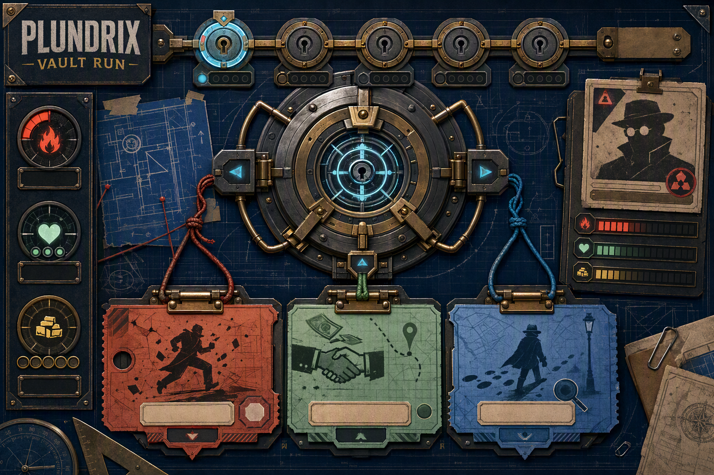
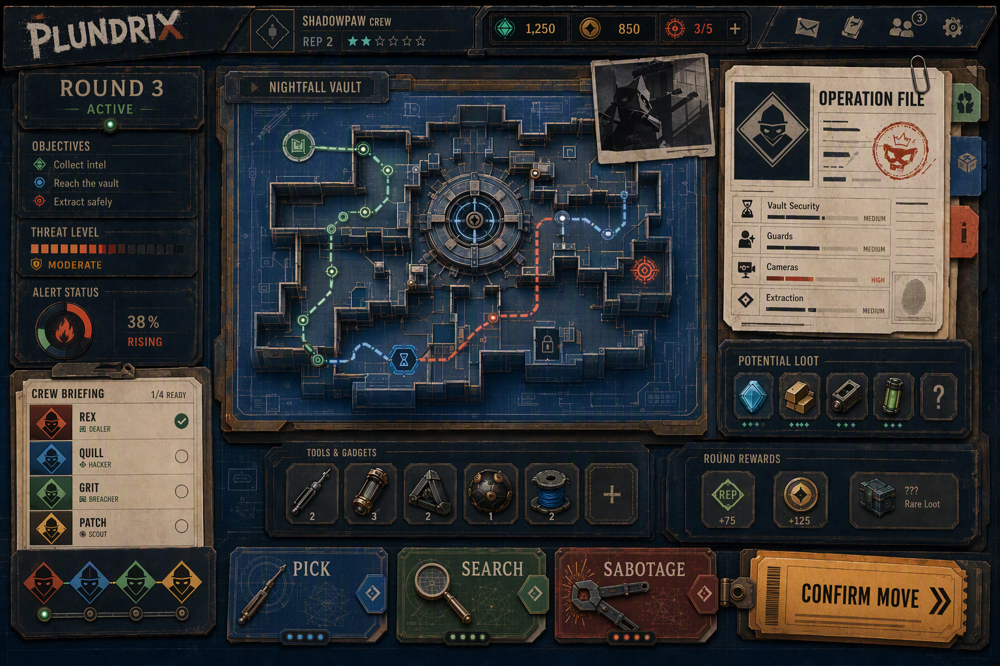
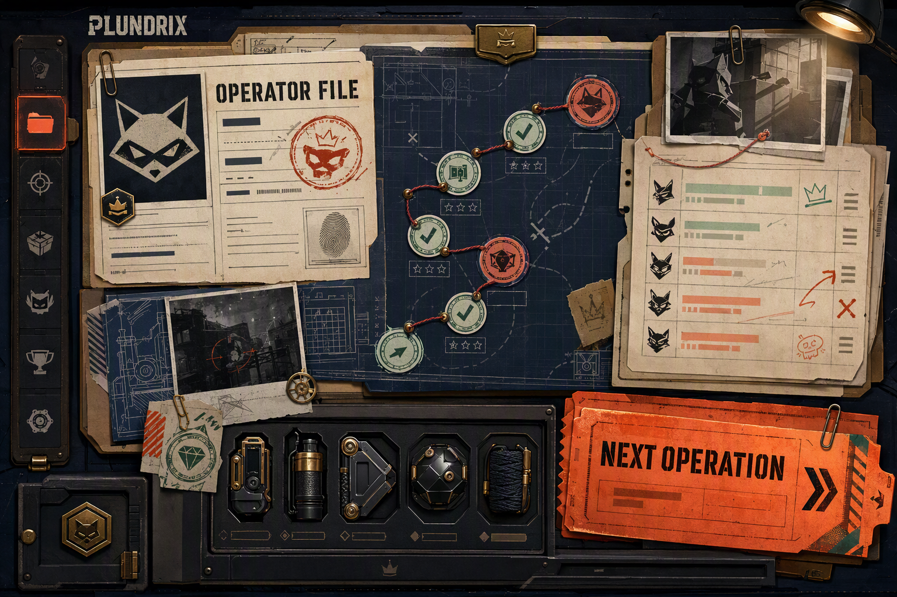
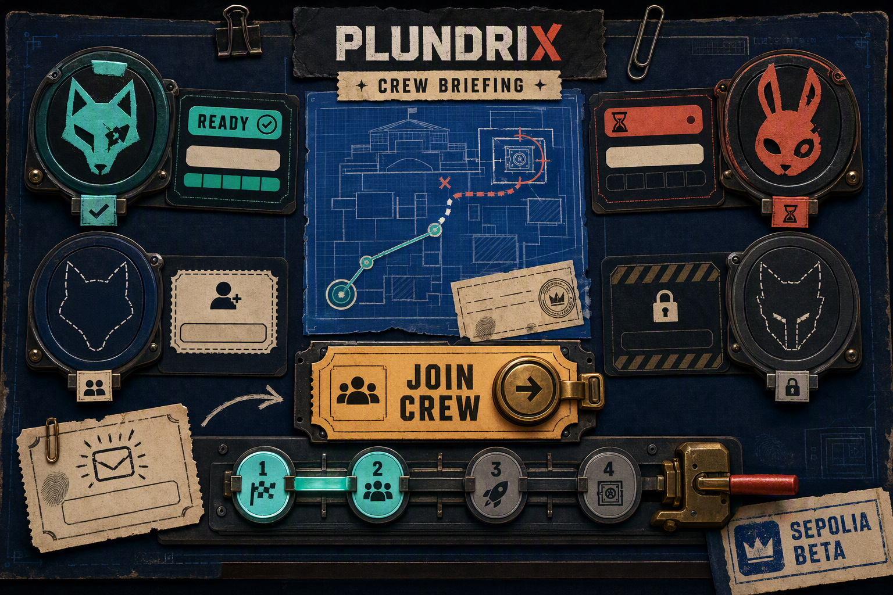
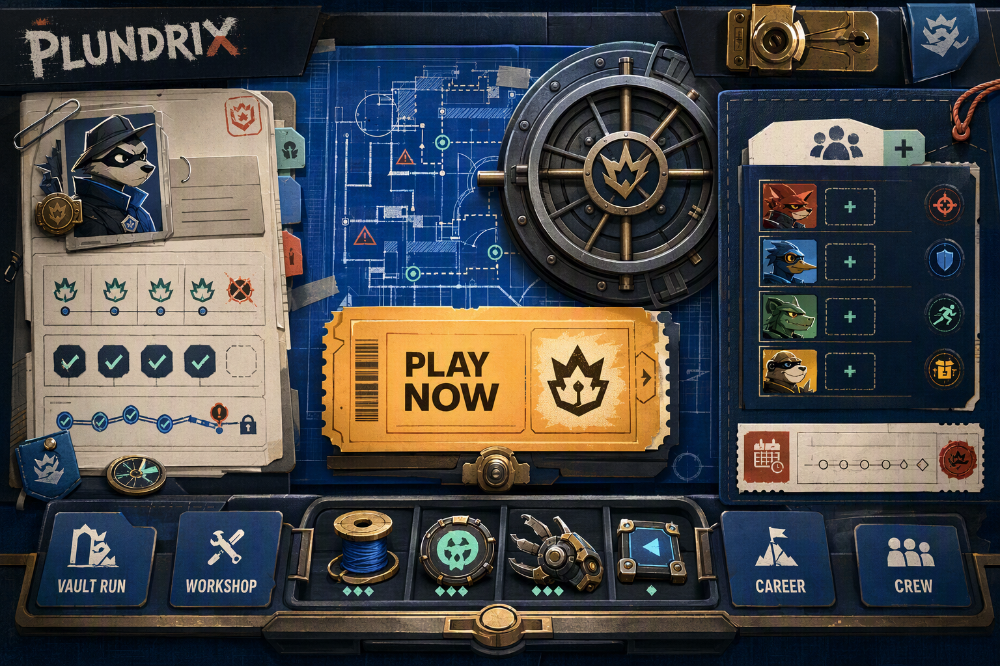

{kind=link}
{kind=link}

Signature gameplay
06 - Living Vault
Make the mechanism the hero and physically connect every route choice to it.
Plundrix / art-direction pass 02 / 2026-09-09
Recommended synthesis: a living vault and route map at the center, evidence and crew context at the edges, Pick/Search/Sabotage as tactile decision plates, and one warm Confirm Move action.

Final synthesis
The corrected synthesis removes the accidental animal cast, restores anonymous operator masks, preserves the living vault and dossier layers, and makes the actual turn loop dominant.

Signature gameplay
Make the mechanism the hero and physically connect every route choice to it.

Progression and identity
Turn a career record into accumulated evidence with a visible path and a tempting next action.

Social state
Make seats, readiness, and launch progress read as one conspiratorial ritual.

Recommended product shell
Unify immediate play, progress, crew, modes, and tools around one warm primary ticket.
Production guardrails
{kind=link}
{kind=link}
{kind=link}
{kind=link}
{kind=link}
{kind=link}
{kind=link}
{kind=link}